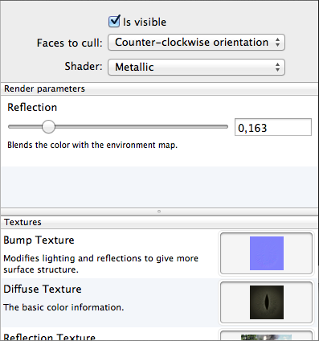

A model in GLLara consists of one or more meshes. Meshes are parts of models that use the same settings for rendering.
Note: Meshes are completely independent of Bones. A mesh typically contains several bones, and the area of a model controlled by a bone can span several meshes.
You can find the meshes of an object in the document window, under its object in the ”Meshes” area. Here, there are several options for each mesh.

You can make meshes visible or invisible. This can be used for example to select optional items like weapons.
By default, GLLara does not render the back of objects (relative to the camera). This setting can be used to change which side is considered the back. You can also render both sides, which can have different results particularly for transparent objects.
You can alter the appearance further by modifying more settings: